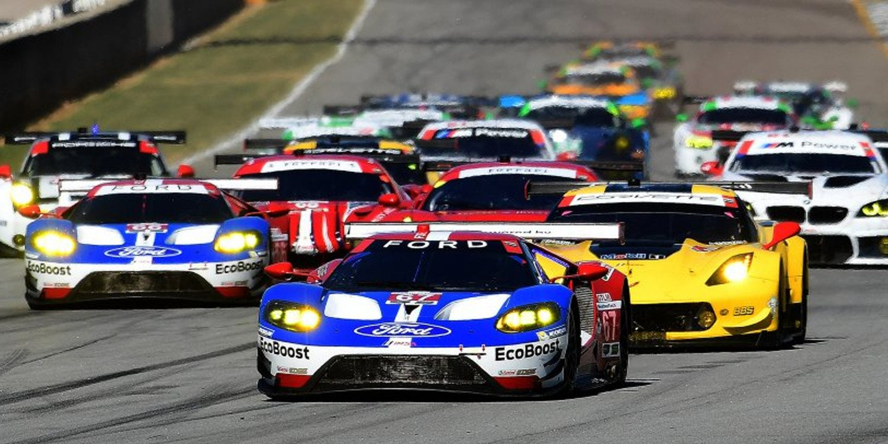

El automovilismo es un deporte que se practica al rededor del mundo y consta de autos modificados que cuentan con muchisima potencia para brindar un nivel de competitividad alto y así lograr su mayor objetivo que es dar espectaculo a los aficionados, existen muchas categorias diferentes del automovilismo, la más famosa es la Formula 1 que son los autos más rapidos en circuito del mundo, ademas que son los más caros llegando a costar más de 20 millones de dolares desarrollar un auto de esta categoria, ademas que ess una de las categorias más exclusivas del mundo, tambien existen categorias poco menos conocidas pero igual de interesantes como es la Nascar y el mundial de resistencia con carreras como las 24 horas de LeMans y las 500 de Indianapolis, además extiste la categoria Gran turismo donde corren autos de marcas automivilisticas famosas adecuados para circuitos.
